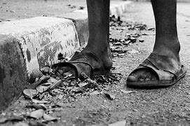
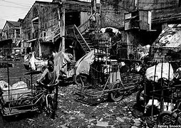

Poverty has been an ongoing issue in the Caribbean, with an average of
thirty percent of the population living in an extreme state of poverty and
only earning about $1.90 a day. Poverty can lead to many other issues that can
affect your community or society. Someone can't survive with only $1.90 and is
expected to afford basic needs. In my community, poverty has lead to an increase
in school dropouts and crime rates, since the pandemic. Spreading awareness of
this issue can vastly help those that are living in this state. The more people
that know about this issue, the more help we can provide.

What is Poverty?
Poverty is a state where people are unable to afford
basic necessities.In today’s world poverty can also include not being able
to afford education and healthcare. These can be further broken down into
many categories such as electricity, (drinking) water, a house etc.

What can you do to reduce poverty?
Finding a solution to poverty is very complex; however, engaging
yourselves in organizations that provide help to those in needs can be of
great support. They are many organizations worldwide that provide
this service.